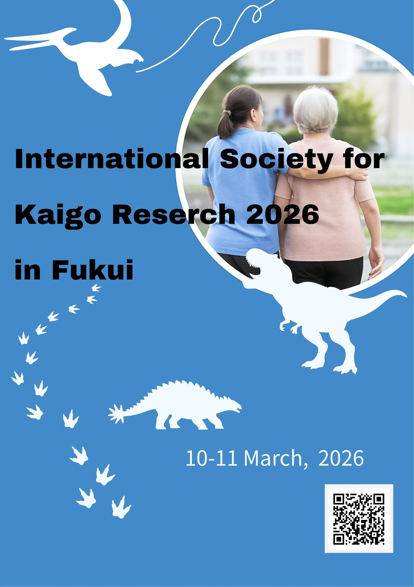

3 Abstracts
Download Flyer | チラシ（日本語版）をダウンロード
Register the meeting without joining the society | ISKR に入会せずに参加

4 Presentation
4.1 10 March First
訪問介護事業存続のための一考察
住永みどり (南阿蘇訪問介護事業企業組合)
Keywords: 訪問介護,地域包括ケアシステム
Considerations for the continuation of home care service
Midori Suminaga (Minamiaso houmonkaigo zigyou kigyou kumiai)
Keywords: home care service, community-based comprehensive care system
本研究は，高齢化が進展する我が国において，今後益々必要とされる訪問介護事業所の倒産が急増しているという問題意識のもと，訪問介護事業所が安定的に事業を存続し，介護が必要になっても住み慣れた地域で安心して生活できる地域包括ケアシステムの構築に向けて考察することを目的とし，訪問介護事業所のサービス提供責任者にアンケート調査を行った。熊本県立大学生命倫理審査委員会の承認（06-33）を得ている。
結果として①営利法人より，非営利法人の方が約２か月赤字の傾向があると言える. ②非営利法人の特徴として営利法人に比べて開設年が古い，訪問介護サービス時の居宅への往復移動距離が長い，訪問介護員数が少ない，法人規模は大きいと言える . ということが導き出された。
人口減少地域の訪問介護事業所が存続するために，サービスに関わる移動経費・人件費や，訪問介護員が安心して働ける所得補償及び働き方について，地域包括ケアシステムを担う保険者が事業者と共に地域の実情に合わせて支援していくことが今後必要であると思われる。
This study aims to examine ways for home care service providers to maintain stable operations and contribute to the development of a community-based comprehensive care system, allowing people to live safely in their familiar communities even when they require care, in light of the increasing number of bankruptcies among home care service providers in our rapidly aging country. To this end, a questionnaire survey was conducted targeting service managers of home care service providers. The study was approved by the Kumamoto Prefectural University Ethics Committee (06-33).
As a result, ① it can be said that nonprofit corporations tend to experience deficits for about two months more than for-profit corporations. ② Characteristics of nonprofit corporations include older establishment years compared to for-profit corporations, longer round-trip distances to clients’ homes during home care services, fewer home care staff, and generally larger corporate size.
In order for home care service providers in regions with declining populations to survive, it will likely be necessary for insurers responsible for the community-based integrated care system to work with service providers to provide support tailored to local conditions, covering transportation and labor costs related to the services, as well as income compensation and working arrangements that allow care workers to work with peace of mind.
4.2 10 March Second
パーキンソン病当事者がマスターズ陸上全国大会で記録を残すことを目標に、競技期に食事調整を行いコンディションを整えた一例 ― 当事者研究としての栄養管理 ―
山口美佐, 浦田あづさ
Keywords:
A case study of nutritional management as participant research: A person with Parkinson’s disease who adjusted their diet during their competitive period to achieve peak condition, aiming to set records at the Masters Athletics National Championships
Misa Yamaguchi, Azusa Urata
Keywords:
パーキンソン病（以下PD）は運動機能低下により、運動やスポーツ実践が困難と捉えられがちである。本報告は、PD診断11年目の当事者であり管理栄養士でもある一症例が、食事管理を行うことでマスターズ陸上全国大会に出場した実践例である。大会7日前よりエネルギー不足を防ぐ食事配分、補食、水分摂取、服薬タイミングを考慮した調整を行った。競技期を通じて体調、体組成、血液指標は安定し、重大な有害事象なく競技参加が可能であった。本症例は、PDでも競技レベルには個人差があるものの、食事管理によりスポーツ実践の可能性が広がることを示唆する。
Parkinson’s disease (PD) is often perceived as making physical activity and sports participation difficult due to impaired motor function. This report details the case of an individual diagnosed with PD for 11 years, who is also a registered dietitian, successfully competing in the National Masters Athletics Championships through dietary management. Seven days prior to the competition, adjustments were made to prevent energy deficiency, considering meal distribution, supplementary snacks, fluid intake, and medication timing. Throughout the competition period, physical condition, body composition, and blood parameters remained stable, enabling participation without significant adverse events. This case suggests that while athletic ability varies among individuals with PD, dietary management can expand the possibilities for sports participation.
4.3 10 March Third
認知症介護者支援介入が介護負担に与える影響のメタ分析
青木 和人 (福井県立大学)
Keywords: 介護負担,認知症,ZBI,ランダム化比較試験,メタ分析
Meta-Analysis of the Effects of Dementia Caregiver Support Interventions on Caregiver Burden
Kazuto AOKI (Fukui Prefectural University)
Keywords: Caregiver burden,Dementia,Zarit Burden Interview (ZBI),Randomized controlled trials,Meta-analysis
本研究は、認知症介護者を対象とした支援介入が介護負担に与える効果を明らかにすることを目的とし、Zarit Burden Interview（ZBI）をアウトカムとする8件のランダム化比較試験を対象にメタ分析を実施した。効果量は標準化平均差（Hedges g）を用い、ランダム効果モデル（REML法）で統合した。その結果、統合効果量はg＝−0.63（95%CI −1.00〜−0.25, p＝0.001）と有意な負担軽減効果が認められた。一方、I²＝78.0％と高度の異質性が確認され、介入形式や追跡期間の違いが影響している可能性が示唆された。この結果から、心理教育的・支援的介入は国際的に有効であると考えられる。
This study aimed to examine the effectiveness of caregiver support interventions on caregiver burden among family caregivers of people with dementia. A meta-analysis was conducted on eight randomized controlled trials (RCTs) that used the Zarit Burden Interview (ZBI) as the primary outcome measure. Effect sizes were calculated as standardized mean differences (Hedges’ g), and a random-effects model (REML method) was applied to account for between-study heterogeneity.
The pooled analysis demonstrated a statistically significant reduction in caregiver burden in the intervention groups compared to control groups (Hedges’ g = −0.63, 95% CI −1.00 to −0.25, p = 0.001), indicating a moderate effect size. Most included studies showed effects in the direction of burden reduction, although the magnitude of effects varied across studies. Substantial heterogeneity was observed (I² = 78.0%, τ² = 0.214), suggesting that differences in intervention type (e.g., face-to-face, home-based, or online programs), follow-up duration, and cultural contexts may have influenced the effect sizes.
These findings provide integrated international evidence supporting the effectiveness of psychoeducational and supportive interventions in reducing caregiver burden. However, the high heterogeneity indicates the need for further subgroup analyses and meta-regression to clarify factors associated with stronger intervention effects. Caregiver support programs may play a crucial role in long-term care systems and dementia care policies worldwide.
4.4 11 March First
「実感」をデータで裏付ける 当事者研究者からのVAS Slider 開発と環境因子相関分析の現在 I
井出 育子, 佐々木 毅然
Substantiating ‘Subjective Experience’ with Data: Development of the VAS Slider and Current Status of Environmental Factor Correlation Analysis by a Patient-Researcher I
Ikuko Ide (痛みのサプリメント), Kizen Sasaki
keywords: 気象病,線維筋痛症,VAS
本研究は、線維筋痛症を有する当事者研究者自身を対象に、疼痛と気象要因の関連を当事者研究の手法で検討した。四季を通じた163日間のアナログ記録では、気圧と疼痛（VAS）との間に統計学的相関は認められなかったが、春季から梅雨期にかけて疼痛や随伴症状の増悪がみられ、季節変化や自律神経の影響が示唆された。後半ではIoTデバイス「VAS Slider」を用い、室内の気圧・温湿度とVAS値を連続記録し、生活環境下での症状変動を時系列で可視化することに成功した。当事者研究とデジタルツールの併用は、セルフマネジメントや気象病研究の新たな可能性を示すと考えられる。
This study investigated the relationship between pain and meteorological factors using participant-led research methods, focusing on participants with fibromyalgia themselves. Analog records spanning 163 days across all seasons showed no statistically significant correlation between atmospheric pressure and pain (VAS). However, exacerbations of pain and associated symptoms were observed from spring through to the rainy season, suggesting influences from seasonal changes and the autonomic nervous system. In the latter part, the IoT device ‘VAS Slider’ was used to continuously record indoor atmospheric pressure, temperature, humidity, and VAS values, successfully visualising symptom fluctuations in daily living environments over time. The combined use of participant-led research and digital tools is considered to demonstrate new possibilities for self-management and research into weather-related illnesses.
4.5 11 March Second
「実感」をデータで裏付ける当事者研究者からのVAS Slider開発と環境因子相関分析の現在 II
佐々木 毅然, 井出 育子
Substantiating ‘Subjective Experience’ with Data: Development of the VAS Slider and Current Status of Environmental Factor Correlation Analysis by a Patient-Researcher II
Kizen Sasaki, Ikuko Ide (痛みのサプリメント)
keywords: Visual Analogue Scale, VAS Slider, IoT, fibromyalgia, environmental factors, self-monitoring
本研究は，線維筋痛症の当事者研究として，「痛み」と「見えない環境因子」の関係解明を目的に，環境データの連続計測と直感的なVAS記録を統合したIoTデバイス「VAS Slider」を開発した。さらにR ShinyによるWeb解析システムを構築し，標準化オーバーレイや分布ラグ非線形モデル（DLNM）等を実装することで，環境因子の遅延効果や累積リスクの可視化を実現した。本系は，診断用ではなく，個人の疼痛予報や環境調整によるQOL向上を支援するセルフモニタリング基盤として有用であることが示唆された。
As part of a patient-led study on severe fibromyalgia, we developed the “VAS Slider”—an IoT device that integrates continuous sensing of “invisible environmental factors” with intuitive VAS recording—and constructed a web-based analysis system using R Shiny. By implementing Standardized Overlay, Cross-Correlation Function (CCF), and Distributed Lag Non-linear Models (DLNM), we visualized the delayed effects and cumulative risks of environmental factors on pain. These results suggest that this system serves as a valuable self-monitoring platform for personalized pain forecasting and environmental adjustment to improve QOL.